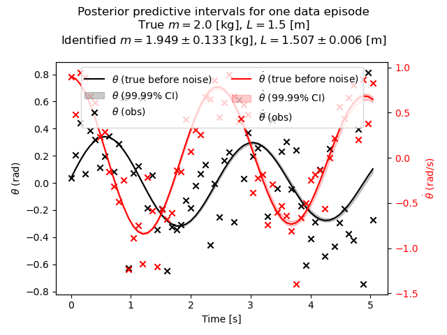

Home > Bayesian (N)ODEs
Bayesian (N)ODEs
I fit a white-box ODE via Markov Chain Monte Carlo (MCMC) using PyMC. The ODE models a simple pendulum. While this is a white-box model, it's easy enough to swap in black-box neural components for e.g. the frictive damping term.
This has the benefit of estimating full distributions per parameter (here, only three parameters), allowing for calibrated uncertainty of outputs.

Results were fit from 8 episodes of 64 steps each, $\delta t=0.08$ [s], observation noise std=0.3 (initial conditions were noise-free).
Inference summary:
| mean | sd | hdi_3% | hdi_97% | mcse_mean | mcse_sd | ess_bulk | ess_tail | r_hat | |
|---|---|---|---|---|---|---|---|---|---|
| m | 1.949 | 0.133 | 1.713 | 2.199 | 0.004 | 0.003 | 1408.0 | 1474.0 | 1.0 |
| L | 1.507 | 0.006 | 1.496 | 1.518 | 0.000 | 0.000 | 1326.0 | 1507.0 | 1.0 |
| sigma | 0.295 | 0.007 | 0.283 | 0.308 | 0.000 | 0.000 | 1399.0 | 1070.0 | 1.0 |
Legend:
- Mean: Posterior mean
- SD: Posterior standard deviation
- HDI (n%): Lower/ bound of Highest Density Interval (HDI)--narrowest possible credible quantiles containing whatever percent of posterior mass
- MCSE (mean/sd): Monte Carlo Standard Error for mean/std--how much simulation noise remains in estimates due to finite number of samples
- ESS (bulk/tail): Effective Sample Size--amount of independent information in the (bulk/tail) region of the posterior. Larger is better; should be near the total number of samples (=chains x draws) for good mixing.
- $\hat{{R}}$: Potential Scale Reduction Factor (Gelman-Rubin statistic)--measures mixing between chains. Values close to 1.0 indicate good mixing, that is, that chains are exploring the same posterior distribution.
- sigma: Observation noise RV (HalfNormal prior)
- m: Pendulum mass RV (HalfNormal prior)
- L: Pendulum length RV (HalfNormal prior)
See also: [[stochastic NODE local notes]]